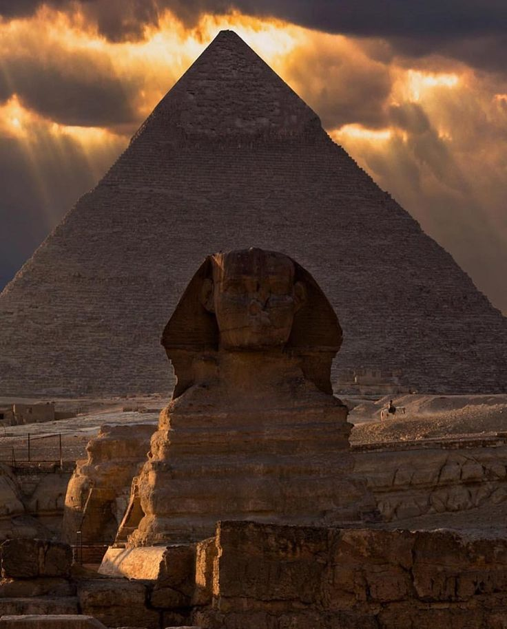
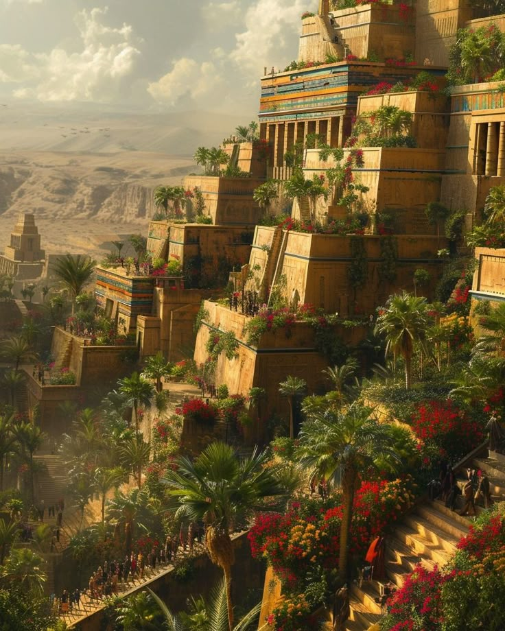
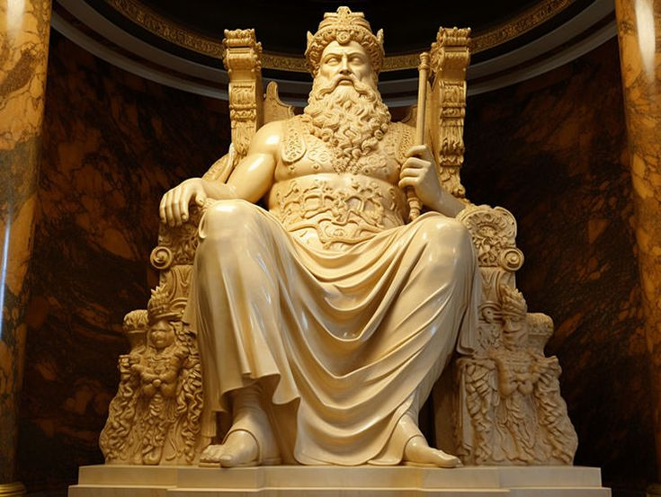
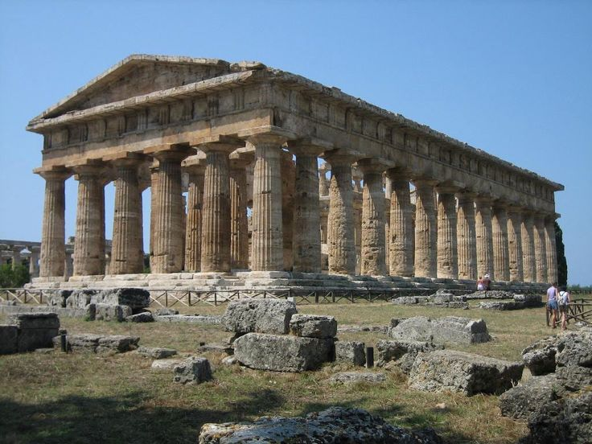
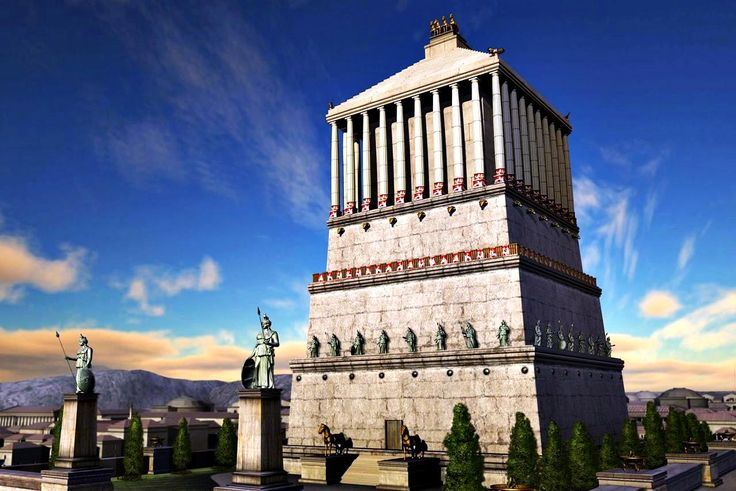
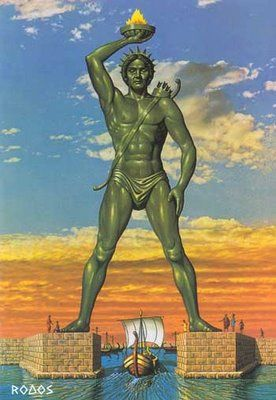
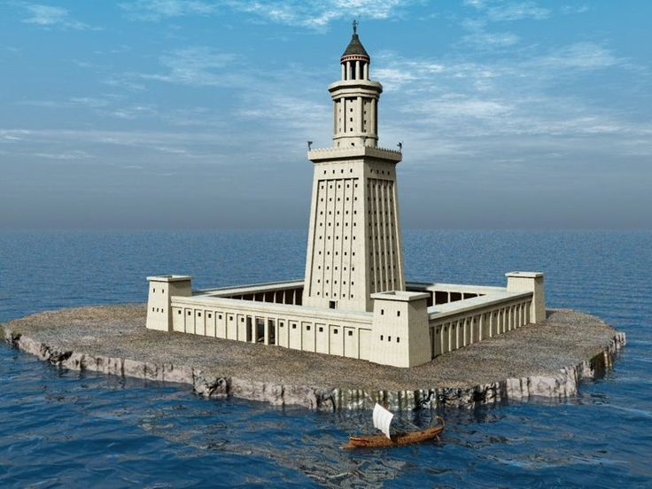
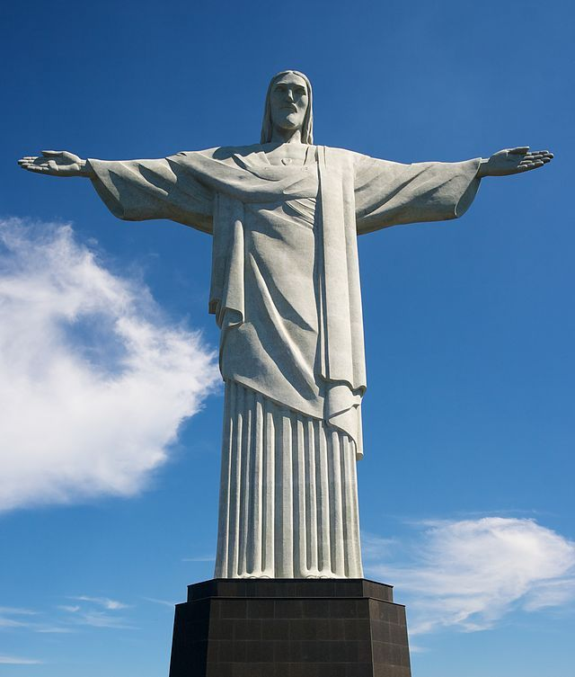
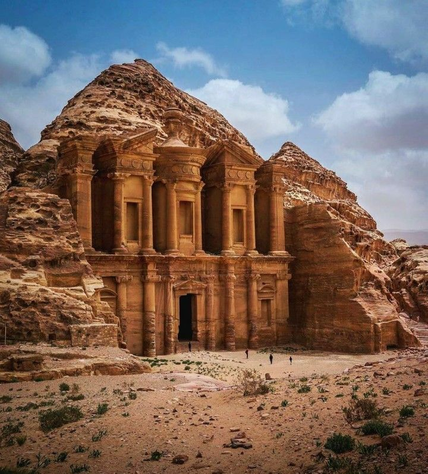

El Patrimonio Cultural
El patrimonio cultural es el conjunto de bienes, tradiciones, exprsesiones y valores que una sociedad hereda del pasado, mantiene en el presente y transmite a las futuras generaciones. Representa la identidad, historia y cultural de un pueblo.
El Patrimonio Cultural Material
Se refiere a los objetos y lugares fisicos creados o modificados por el ser humano que tienen valor historico, artistico o cientifico.
Ejemplos: Monumnetos y edificios historicos (templos, iglesias, palacios). Obras de arte (pinturas, esculturas). Sitios arqueologicos (Teotihuacan, Machu Pichu). Objetos antiguos, vestimentas o herramientas tradicionales.
Patrimonio Cultural Inmaterial
Comprende las manifestaciones vivas de la cultura: las tradiciones, expresiones, conocimientos y tecnicas transmitidas de generacion en generacion.
Ejemplos: Lenguas y expresiones orales. Musica, danzas y rituales. Festividades populares (Dia de muertos en Mexico). Gastronomia tradicional. Artesanias y saberes ancentrales.
Diferencias estre patrimonio msterial e inmaterial
El patrimonio material y el patrimonio inmaterial se diferencian en que el primeri es tangible, es decir, se puede ver y tocar, como monumentos, edificios, esculturas o sitios arqueologicos; mientras que el segundo es intangible, pues esta formado por tradicciones, costumbres, musica, danzas y saberes que se transmiten de generacion en gereracion. El patrimonio material se conserva fisicamente, y el inmaterial se mantiene vivo gracias a la practica y memoria de las personas.
¿Cuales practicas artisticas y culturales en el mundo, pais, comunidad o localidad forman parte del patrimonio cultural?
En el mundo: Carnaval de Rio Janeiro (Brasil). Flamenco (España). Opera de Pekin (China). Tango (Argentina y Uruguay).
En Mexico: Dia de Muertos. Mariachi, Musica tradicional. Cocina tradicional mexicana (como el mole, pozole o los tamales). Danzas folkloricas (como la del venado o la de los viejitos.)
En mi comunidad: Las fiestas patronales, la Artesania local, (por ejemplo el bordado) la musica y las danzas tipicas de la zona.
De que depende para identificar un patrimonio. (Depende del consenso, reconocimiento colectivo y institucional)
1. Del consenso social o colectivo: Es fundamental que la comunidad reconozca un bien, practica o tradicion como parte de su identidad y herencia cultural.
Ejemplo: Una fiesta local o una danza tradicional es patrimonio si las personas del lugar la valoran, practican o consideran significativa.
2. Del reconocimiento institucional: Organismos como la UNESCO, el INAH (en Mexico) o las autoridades culturales locales pueden registrar y proteger oficialmente un patrimonio, ya sea material o inmaterial.
Ejeplo: La UNESCO declaro el Dia de Muertos como patrimonio cultural inmaterial de la humanidad en 2008.
3. Del valor cultural, historico o simbolico: Un patrimonio se identifica tambien por su importancia para la historia, la memoria colectiva, el arte o la tradicion de un pueblo.
Investigar las primeras siete maravillas del mundo y las siete maravillas actuales (como se llaman, donde se ubican, si hay un creador y una imagen de la misma).
MARAVILLAS DEL MUNDO ANTIGUO:
1.La Gran Piramide de Guiza se encuentra en la meseta de Guiza, Egipto, cerca de El Cairo. Fue construida por orden del Faraon Keops y servia como parte de su complejo funerario, con un proposito religioso y de glorificacion del gobernante, no como obra de un "creador" abstracto.

2. Los Jardines Colgantes de Babilonia fueron construidos por el rey Nabucodonosor II, y la teoria mas aceptada es que estaban ubicados en la antigua ciudad de Babilonia (actual Irak) a orillas del rio Eufrates. Sin embargo. la ubicacion exacta es debatida y no ha sido confirmada arqueologicamente. Algunos investigadores sugieren que los jardines podrian haber estado en la ciudad asiria de Ninive, construidos por el rey Senaquerib.

3. La estatua de Zeus se encontraba en el Templo de Zeus en Olimpia, Gracia. Fue creada por el escultor Fidias alrededor del año 435 a.c. y era una de las Siete Maravillas del Mundo Antiguo. Hoy en dia, la estatua original ya no existe, haciendose perdido en el siglo V d.C.

4.El Templo de Artemisa se encuentra en la antigua ciudad de efeso, cerca de la actual Selcuk, en Turquia. Los creadores atribuidos a su construccion inicial son el arquitecto Quersifron de Cnosos y su hijo Metagenes, con financiacion del rey Creso de Lidia.

5.El Mausoleo de Halicarnaso se ubicaba en la antigua ciudad de Halicarnaso, hoy Bodrum, Turquia. El creador de la obra fue su esposa y hermana, Artemisia II de Caria, quien encargo la construccion a los arquitectos griegos Satiro de Paros y Piteo en honor a su difunto esposoMausolo.

6.El coloso de Rodas fue Cares de Lindos, y la estatua se erigio en la entrada del puerto de la isla de Rodas, en la antigua Grecia. Aunque la ubicacion exacta sigue en debate, se cree que se encontraba cerca del puerto de Mandraqui, con algunas teorias sugiriendo que podria haber estado en el fuerte de San Nicolas o en la Acropolis.

7. El Faro de Alejandria se ubicaba en la isla de Faros, frente a la costa de la ciudad de Alejandria, Egipto. Su creador fue el arquitecto griego Sostrato de Xnido, por encargo de Ptolomeo I y completado por su hijo Ptolomeo II entre el 284 y el 246 a.C.

MARAVILLAS DEL MUNDO MODERNO
1. Chichen Itza se encuentra en la peninsula de Yucatan, Mexico, a unos 120 kilometros de Merida y 200 kilometros de Cancun. El sitio arqueologico fue fundado por los mayas, pero no tiene un unico "creador" sino que es el resultado de la evolucion de la civilizacion a lo largo de siglos, con la fusion de las culturas maya y tolteca.

2. El Coliseo Romano se encuentra en Piazza del Colosseo, 1, 00184 Roma, Italia, y su creacion se atribuye al emperador Vespasiano, aunque fue finalizado por sus hijos, los emperadores Tito y Domiciano. Fue iniciado alrededor del año 71 d.C. y terminado en el 80 D.C.

3. El Cristo Redentor se encuentra en la cima del cerro Corcovado, en Rio de Janeiro, Brasil. Su ubicacion exacta es a 710 metros sobre el nivel del mar, dentro del Parque Nacional de Tijuca. En cuento a sus creadores, el diseño fue de Heitor da Silva Costa (ingeniero brasileño) y el escultor Paul Landowski (polaco-frances) creo los brazos y el rostro de la estatua, y fue construido por un equipo que incluyo a otros ingenieros y tecnicos.

4. La Gran Muralla China se encuentra en el norte de China, extendiendose desde la provincia de Liaoning en el este hasta la provincia de Gansu en el oeste. Nohay un solo creador, ya que su contruccion fue un proyecto militar de defensa que se extendio durante muchos siglos y diferentes dinastias, aunque el primer emperador, Qin Shi Huang, inicio la construccion de partes de ella y la dinastia Ming construyo la mayoria de las secciones que conocemos hoy.

5. Machu Picchu esta ubicado en el distrito del mismo nombre, provincia de Urubamba, departamento de Cusco, Peru, a una altitud de aproximadamente 2,430 metros sobre el nivel del mar en la cima de una montaña en los Andres. Fue construido por los incas durante el reinado de Pachacutec en el siglo XV, alrededor del año 1430.

6. Petra se ubica en el suroeste de Jordania, en un valle estrecho entre el Mar Muerto y el Golfo de Aqaba. No tiene un unico creador, sino que fue la capital del antiguo reino arabe de los nabateos, quienes la construyeron esculpiendola en las rocas hace mas de 2,000 años.

7. El Taj Mahal esta ubicado en Agra, India, a orillas del rio Yamuna. El creador del Taj Mahal fue el emperador mogol Shah Jahan, quien lo mando construir como mausoleo para su esposa favorita, Mumtaz Mahal.

Investigar que se conserva, quien lo decide y con que criterios (considerando que el valor patrimonial no siempre surge del consenso comunitaro), tambien los mecanismos institucionales y narrativas oficiales.
La seleccion de que se conserva como patrimonio. Generalmente, son organismos estatales o institucionales los que definen el valor patrimonial, usando criterios como la autenticidad, la importancia historica o la singularidad. Los mecanismos incluyen listafos de patrimonio (como la lista de Patrimonio Mundial), planes de gestion y declaratorias oficiales que establecen las narrativas y la proteccion legal para estos bienes.
¿que se conserva? Se conservan bienes materiales (edificios, monumentos, sitios arqueologicos), inmateriales (tradiciones, rituales, lenguas), y naturales (ecosistemas, paisajes) que son conocidos como de valor excepcional.
¿Quien lo decide? Instituciones estatales y supranacionales: Organismos como el Consejo Nacional para la Cultura y las Artes (conaculta) en Mexico, la UNESCO, o ministerios de cultura y patrimonio, son los principales actores en la toma de decisiones.
Comites de expertos: Especialistas en historia, arqueologia, arquitectura, antropologia y otras disiplinas evaluan y recomiendan que bienes deben ser declarados patrimonio.
¿Con que criterios? Valor universal y excepcional: la UNESCO utliza criterios de importancia mundial y trascendencia para la humanidad.
Autenticidad: se busca que el bien sea un testimonio genuino de un periodo o altura.
Integridad:El estado de conservacion debe ser lo suficiente bueno para que se pueda apreciar su valor.
Singularidad y representatividad: La capacidad de un bien para representar un tipo de patrimonio o una altura particular.
Mecanismos Institucionales y Narrativas Oficiales:
Declaratorias y listados: La formalizacion de un bien como patrimonio a traves de decretos o inclusiones en listas oficiales.
Planes de manejo y restauracion: Establecen las normas para la conservacion, uso y restauracion de los bienes declarados.
Narrativas oficiales: Se crean historias y discursos que justifican el valor de patrimonio, destacando su importancia historica, cultural o identitaria, incluso si estas narrativas difieren de las perspectivas de las comunidades locales.
Regulaciones y financiamiento: Las instituciones establecen leyes y mecanismos para asegurar la proteccion de los bienes y, en ocasiones, asignan recursos economicos para su preservacion.